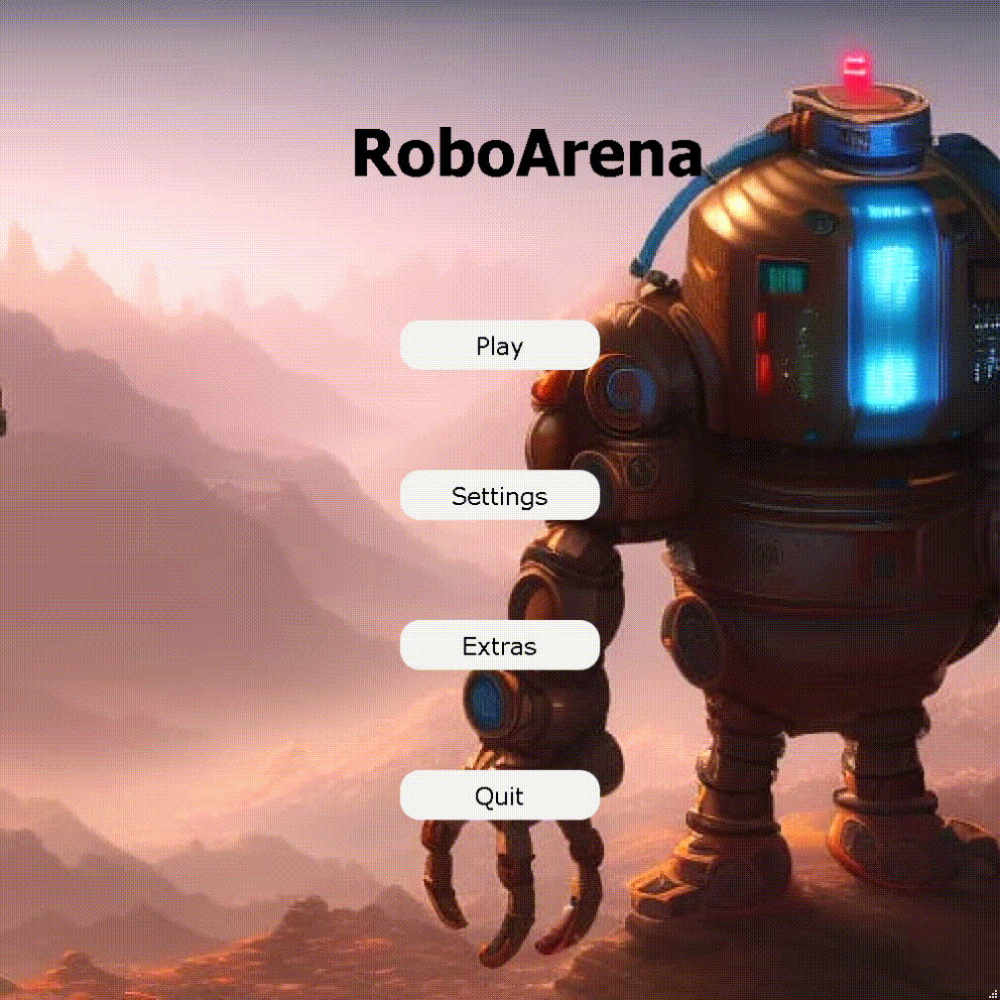
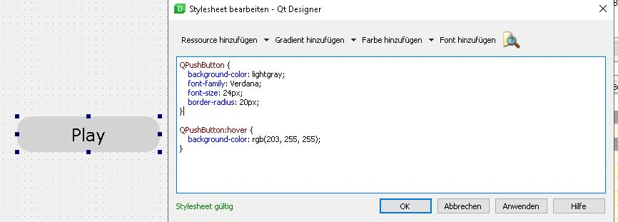
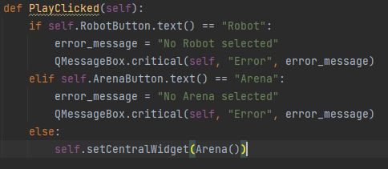
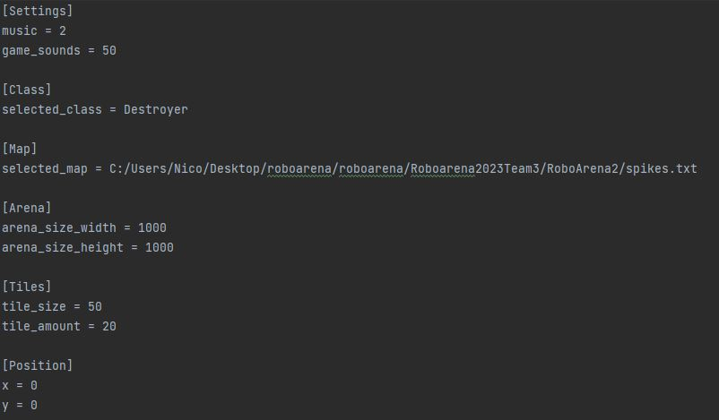
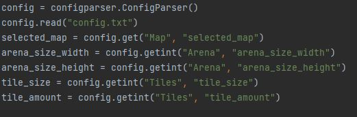

Overhauling Menu (Nico)
Visual Changes:
- Buttons significantly bigger.
- Buttons have rounded edges.
- Hovering over a button changes the color.
- Different Font.
The hover effect

Stylesheet in Qt Designer
- The stylesheet influences the appearance and behaviour of the buttons.
- The process of changing the buttons is much easier and more practical in Qt Designer compared to directly modifying the code of the buttons in our python files.
- We wanted to use a custom font, but QT Designer doesn't enable adding custom fonts.

Switching between menus(windows)
- Changed the way how we switch between windows.
- Using the setCentralWidget function is more practical and prevents the small flickering we had previous when switching between menus.
- We dont have to adjust the position everytime we open a new window.
Starting the game from the menu
- The game is startable from the menu by setting the CentralWidget to the Arena class.
- Currently the robots arent loaded.
- Switching between the menu and the actual game window is without delay.

Extending the config file
- Added several variables.
- The different python files obtain their information from the config file.

Advantage:
We can change properties of the game just by changing variables in the config file and dont have to search for every instance in different py files.
Code to access config file

- An instance of the Configparser Class is created.
- The config file is read.
- Variables from different Sections are saved.